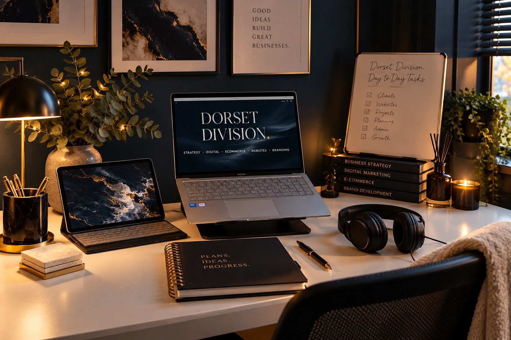

Ask better questions.
The first thing a client asks for isn't always the thing they need. I take time to understand the bigger picture before recommending a solution.
I've spent more than 20 years learning how businesses work, what makes them struggle and what it actually takes to get things done.
I'm not an agency, and I'm not interested in making simple things complicated. I'm an independent business and digital specialist who brings commercial thinking, creative skills and practical experience together.
When you work with Dorset Division, you're working with me. From the first conversation to the finished project.

I'm Marnie Danson, and my working life hasn't followed one neat job title.
I've worked across businesses, industries and different sides of the commercial world. I've dealt with customers, sales, operations, ecommerce, marketing, technology and the everyday problems that come with running something.
I've been the person managing the work, the person solving the problems and the person trying to find a better way of doing things when the existing one clearly isn't working.
Over time, I found that the most useful skill wasn't being able to do just one thing exceptionally well. It was understanding how different parts of a business affect each other.
A website problem might actually be a customer journey problem. Poor sales might have more to do with product information or positioning than advertising. A business idea might sound brilliant until you investigate the costs, competition and practicalities.
That's the way I think. I look beyond the immediate task to understand what it connects to.
Dorset Division gives me the freedom to bring all of that experience together, rather than pretending every business problem belongs in a separate department.
And I genuinely enjoy getting stuck into the work.
There's a difference between knowing how something should work and having the experience to make it work in practice.
I've managed ecommerce catalogues containing more than 5,000 products, worked across Shopify, Etsy, TikTok Shop and Amazon, built websites and digital systems, developed branding and content, supported authors through publishing projects and researched commercial opportunities.
I've worked with the details that can make or break a project: product data, customer journeys, website functionality, operational processes, platform requirements, budgets, deadlines and the thousand little things that rarely make it into the original brief.
I also know what it's like to run a business yourself.
When you're the person responsible for making the decisions, every recommendation has consequences. Money gets spent. Time gets committed. Someone has to maintain whatever gets built.
That's why I don't recommend something simply because it's fashionable, technically possible or looks impressive.
I want to know whether it's appropriate for the business, what it will take to deliver and whether it makes commercial sense.
Sometimes that means developing a complete strategy. Sometimes it means finding the problem nobody has spotted. And sometimes it means rolling up my sleeves and fixing the thing that's been driving everyone mad.
Dorset Division is deliberately independent.
You're not passed from a salesperson to an account manager, then to someone else who needs the whole project explaining again.
I listen to what you need, ask the questions, do the research, develop the recommendations and carry out the agreed work.
That doesn't mean pretending I know everything. It means being clear about what I can do, recognising when specialist input is needed and being realistic about what a project involves.
You can expect honest communication, attention to detail and someone who treats your time and money as though they matter.
Because they do.
I want you to understand what's happening, why we're doing it and what you're getting for your investment.
And if I think there's a better or simpler way to achieve something, I'll tell you.
WHAT MATTERS TO ME
The first thing a client asks for isn't always the thing they need. I take time to understand the bigger picture before recommending a solution.
A beautiful website, clever idea or impressive strategy means very little if it doesn't suit the business behind it. Practicalities matter.
I'm not interested in handing over a vague list of suggestions and calling the job finished. When I'm responsible for delivering something, I take that responsibility seriously.
I'll tell you when I believe something will work, when I see a problem and when I think there's a better option. I'd rather have an honest conversation than agree with something just to win the project.
I don't believe good business advice should stop at telling someone what to do. It should stand up to real-world scrutiny — and, when needed, turn into real work.
Maybe you have a detailed brief. Maybe you're building something from scratch. Or perhaps there's a problem in your business that nobody has managed to get to the bottom of.
Tell me what's happening.
I'll ask the questions, look at what's involved and we'll establish whether I'm the right person to help.